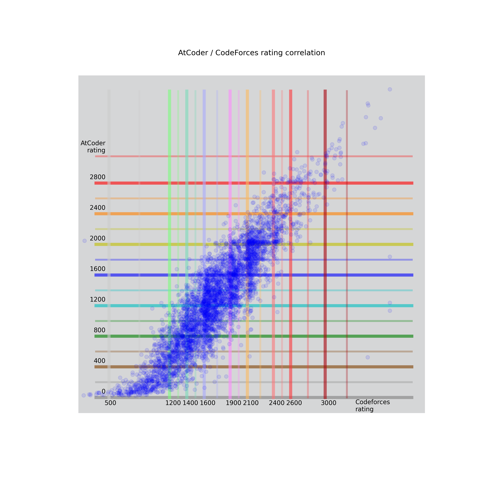

Sport programming sites rating correlation
AtCoder rating vs CodeForces rating
I'm new on AtCoder and I was interested in correlation between CodeForces and AtCoder ratings.
I took AtCoder accounts which have link to corresponding CodeForces handles.
Then selected only those who have at least 7 writed contests on both.
(Today it's 4517 of coders)
Let's look what we have now.
Here you can get your expected rank on AtCoder (or Codeforces)
from your rating on the site you're expirienced on.
-- Here are some plots --
*** At first just users of both sites, represented as points with rating-coordinates. ***

*** Then the same, but in a heatmap form. ***
*** Now the plot of mean values of each 20 consecutive users
(sorted by CodeForces rating) ***
(sorted by CodeForces rating) ***
*** Seems linear ***

*** Let's show this dependency differently ***
-- Just for fun --
*** Plot of rating depending on count of written rounds ***
*** Aaand another one ***
-- Last but not least --
*** Histogram of both sites users ***
- here you can send any questions, wishes or suggestions.